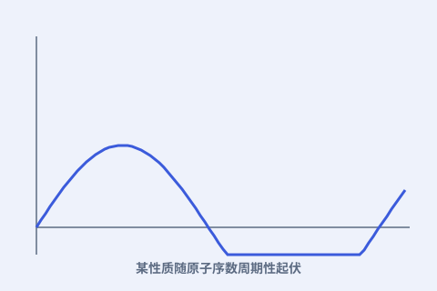

一、性质会重复
随着原子量增大，元素的某些性质（如化合价、密度趋势）会呈现“升—降—升”的节律，像波浪一样循环。

二、为什么会“循环”
门捷列夫当时还说不清根源，只从数据看出周期。后来人们才明白：周期来自原子电子层结构的重复。
三、原子序数更准
莫塞莱发现，决定周期顺序的其实是原子序数（核内质子数），而非原子量。用它重排，少数“反例”也归了位。
四、规律的威力
一旦承认周期律，元素的“性格”就不再是孤立事实，而是位置的函数。这为理解化学键、反应性提供了总框架。
随着原子量增大，元素的某些性质（如化合价、密度趋势）会呈现“升—降—升”的节律，像波浪一样循环。

门捷列夫当时还说不清根源，只从数据看出周期。后来人们才明白：周期来自原子电子层结构的重复。
莫塞莱发现，决定周期顺序的其实是原子序数（核内质子数），而非原子量。用它重排，少数“反例”也归了位。
一旦承认周期律，元素的“性格”就不再是孤立事实，而是位置的函数。这为理解化学键、反应性提供了总框架。
本页内容依据公开史料与科学史通识编写；更多来源见 本站《资料来源与延伸阅读》。延伸检索：维基百科「德米特里·门捷列夫」词条 ↗